| > |
restart; with(student): |
The methods and commands in this tutorial are not strictly necessary, because Maple uses them behind the scenes when they are needed. But they can help you learn about the integration techniques we are covering without the need to do lots of algebra.
Integration by parts
There is no elementary technique for this integral.
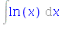
Applying parts, however, makes it easy.
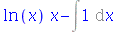
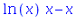
You can get some nice "reduction formulas" this way.
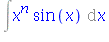
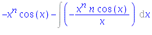
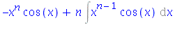
Substitutions
| > |
Int( sqrt(4-x^2)/x^2, x=1..2 ); |
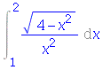
| > |
changevar( x=2*sin(theta), %, theta ); |
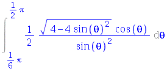
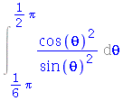
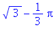
Partial fractions
In class we only cover distinct linear factors, but there are partial fraction expressions for all possible kinds of rational functions. Maple will also do long division if the degree of the numerator is greater than that of the denominator.
| > |
r:= (x^4-2*x+1) / (2*x^3 + 3*x^2 -2*x ); |
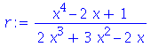
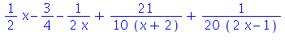
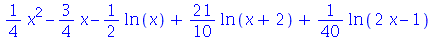
Here is what happens with repeated linear factors in the denominator.
| > |
r:= x^2 / ( (x-1)^3*(x+2) ); |
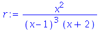
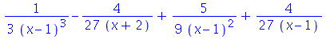
And here is an irreducible quadratic factor.
| > |
r:= 1 / ( (x^2+1)*(x-2) ); |
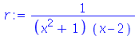
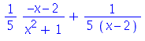
Improper integrals
You can evaluate improper integrals by the definition. But you may have to be very explicit about assumptions on certain values and one-sided limits.

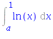
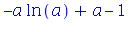
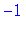
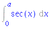
| > |
value(%) assuming a>0 and a<Pi/2; |
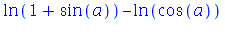
| > |
limit( %, a=Pi/2, left ); |
In many cases Maple will handle improper integrals automatically and tell you if the integral is not possible.
| > |
Int( 1/(x-2), x=1..3 ); |
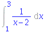
| > |
Int( ln(x)/x^2, x=1..infinity ); |
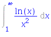